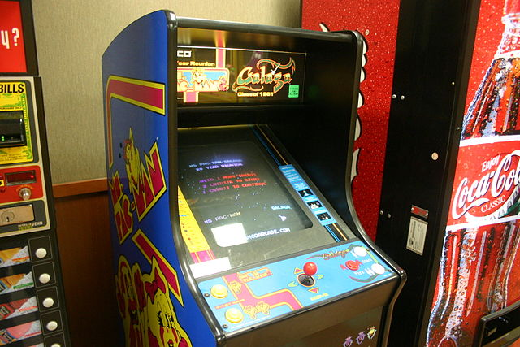
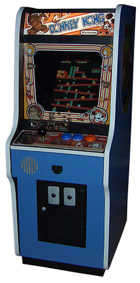

| Pág. Principal | Década de 1960 | Década de 1970 | Únetenos | Arcade de PacMan/GalagaArcade de Donkey KongNimrod, consola del juego Nim | Historia de los videojuegosLa historia de los videojuegos tiene su origen en la década de 1950 cuando, tras el fin de la Segunda Guerra Mundial, las potencias vencedoras de la guerra, construyeron los primeros superordenadores programables. Los primeros intentos por implementar programas de carácter lúdico (inicialmente programas de ajedrez) no tardaron en aparecer, y se fueron repitiendo durante las siguientes décadas. Los primeros videojuegos modernos aparecieron en la década de los 60, y desde entonces el mundo de los videojuegos no ha dejado de crecer y desarrollarse con el único límite que le ha impuesto la creatividad de los desarrolladores y la evolución tecnológica. En los últimos años, se asiste a una era de progreso tecnológico dominada por una industria que promueve un modelo de consumo rápido donde las nuevas superproducciones quedan obsoletas en pocos meses, pero donde a la vez un grupo de personas e instituciones -conscientes del papel que los programas pioneros, las compañías que definieron el mercado y los grandes visionarios tuvieron en el desarrollo de dicha industria- han iniciado el estudio formal de la historia de los videojuegos. Década de 1950Consolas «primitivas»En 1950 el 90% de los hogares norteamericanos disponían de al menos un aparato de televisión, una cifra que contrastaba fuertemente con el 9% de la década anterior. Era natural que diversas personas relacionadas con ese mundo comenzasen a preguntarse si era posible usar esos aparatos para otra cosa que no fuese la simple recepción de programas. Ya en 1947 la compañía Dumont había explorado la idea de permitir a los espectadores jugar con sus aparatos de televisión; Thomas Goldsmith y Estle Mann, dos de sus empleados, patentaron su tubo de rayos catódicos, un aparato basado en un simple circuito eléctrico que permitía a los espectadores disparar misiles hacia un objetivo, pero que no llegó a comercializarse jamás. Pocos años más tarde un ingeniero de origen alemán que acabaría siendo considerado por muchos como el verdadero padre de los videojuegos domésticos tuvo una visión que resultaría crucial en el desarrollo posterior de la industria de los juegos electrónicos: en 1951 Ralph Baer trabajaba como técnico de televisión y, junto a algunos colegas, había recibido el encargo de construir un receptor desde cero. Para comprobar los equipos usaban instrumentos que dibujaban líneas y patrones de colores que los técnicos podían mover a través de la pantalla para ajustarla, y a partir de esa idea Baer se planteó la posibilidad de construir aparatos de televisión que permitiesen algo más que la simple recepción de los programas. Sin embargo el ingeniero mantuvo apartada su idea hasta 1972 en que lanzó al mercado la Magnavox Odyssey, la primera consola de videojuegos doméstica de la historia. |